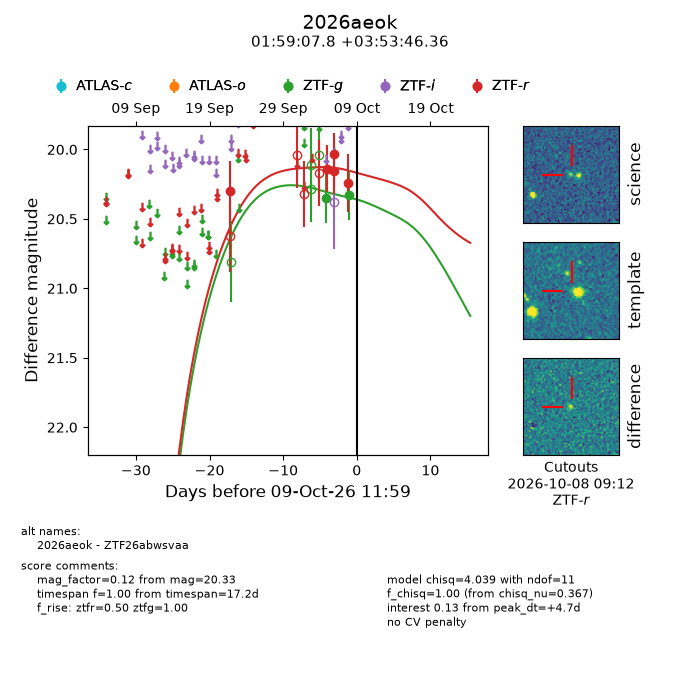
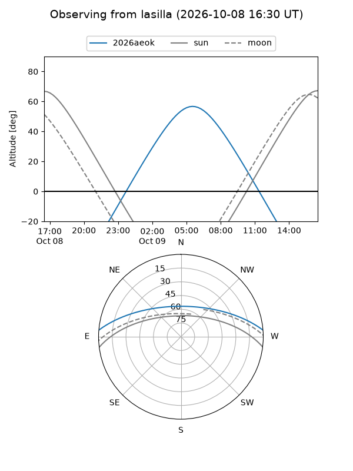
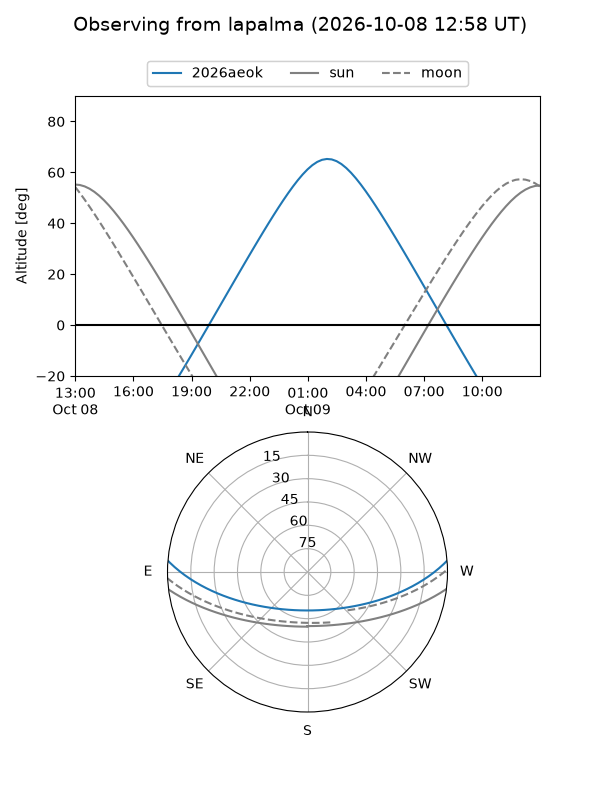
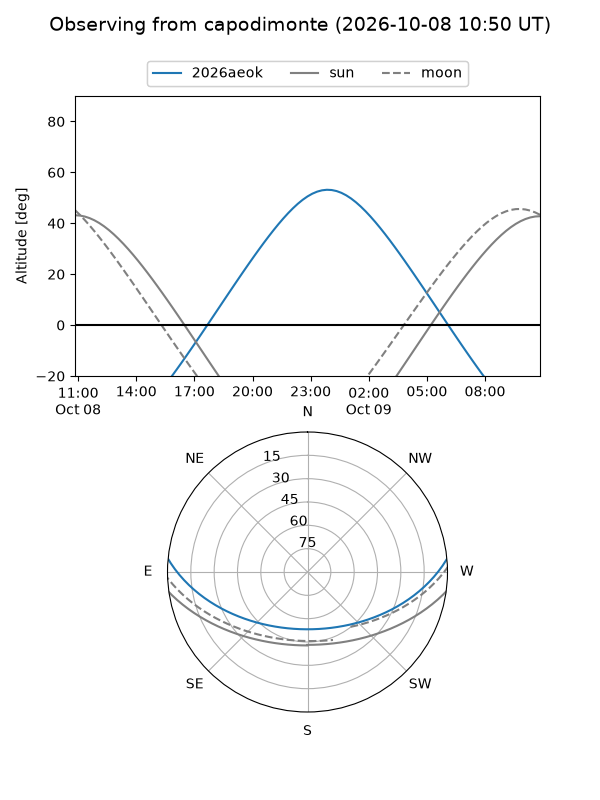
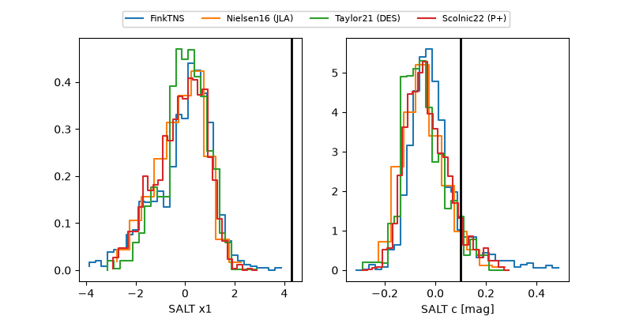

2026aeok
Target 2026aeok at 2026-10-09 12:01
Aliases and brokers:
FINK-ZTF: ztf.fink-portal.org/ZTF26abwsvaa
Lasair-ZTF: lasair-ztf.lsst.ac.uk/objects/ZTF26abwsvaa
ALeRCE-ZTF: alerce.online/object/ZTF26abwsvaa
YSE-PZ: ziggy.ucolick.org/yse/transient_detail/2026aeok
TNS name: wis-tns.org/object/2026aeok
Direct TNS query: direct search
alt names
ZTF26abwsvaa (ztf,fink_ztf)
2026aeok (tns,yse)
Coordinates:
equatorial (ra, dec) = 29.7825,+3.89621
equatorial (HMS+DMS) = 01:59:07.79,+03:53:46.36
galactic (l, b) = (153.2962,-54.93464)
Flags:
peak dt: +4.7
Photometry:
last ztfg=20.33, ztfr=20.24
2 ztfg, 5 ztfr detections
Lightcurve

Visibility



Additional plots
